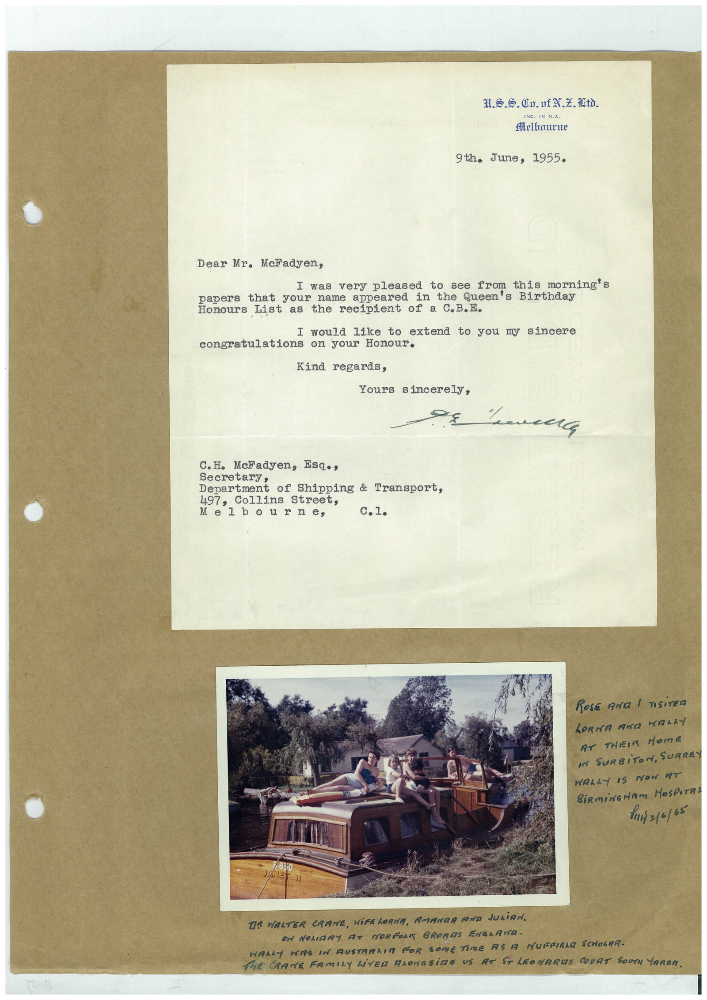

Book 1 · scan 117


Description
Transcription
Context
Review notes
Compare the machine draft with the scan. Handwriting and names need human review.
Artifacts
Edit the artifacts field in this note’s frontmatter to change these records. This summary is generated.
B01-S117-A01 — Letter, Photo & Handwritten note — Book 1, scan 117
Types: Typed document, Letter, Photo, Handwritten note
Scope: Whole scanned page; individual items can be split out during review.
Caption: Not mapped yet.
Caption source: Not recorded yet.
Caption status: unmapped
Machine transcription
ING. IN N.Z. Melhmirne 9th. June, 1955. Dear Mr. Mcfadyen, I was very pleased to see from this morning's papers that your name appeared in the Queen's Birthday Honours List the recipient of a C.B.E. I would like to extend to you my sincere congratulations on your Honour. Kind regards, Yours sincerely, C.H. MeFadyen, Esq., secretary epartment of Shipping & Iransport, 497, Collins Street, Melbourne, C.1. ROSE AND / VISiTER LORMA AND HALAY RT THEIR HOME I SURBiTON, SURREY WALLY IS NOW AT hi 310/65 TR HALTER CRAME, WiFELORAR, AMANRA RUD JULiAN. ON MONIARY AT NORFOLK BRORIS ENGLANA. HALLY HAS IN AUSTRALIA FOR SOMETIME AS A MUFFIEL SCHOLAR. THE CRANE FAMILY LiVED ALONGSiDE US AT STLEOMARIS COURT SOUTN TARRA.